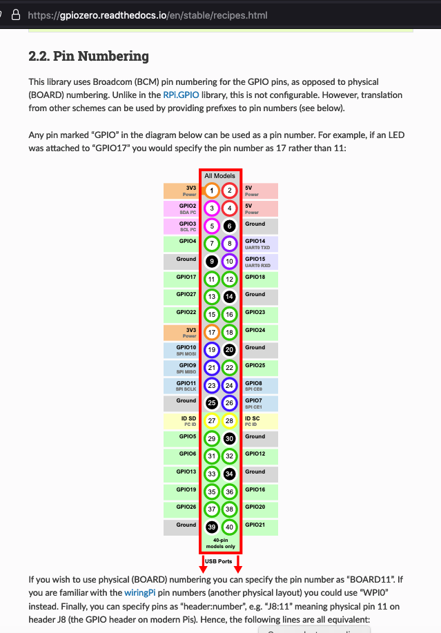
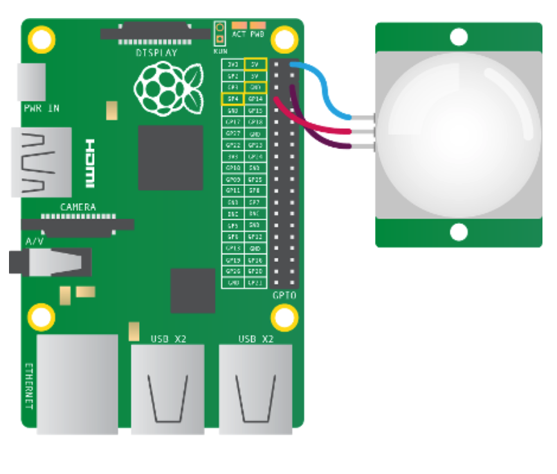
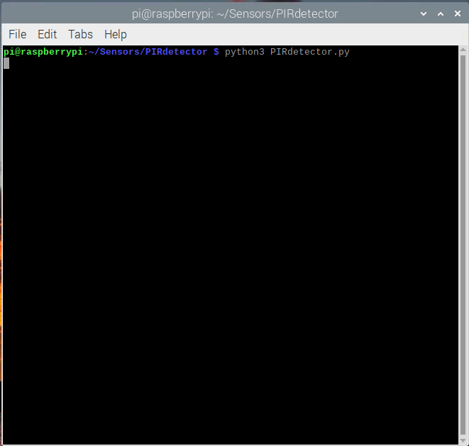
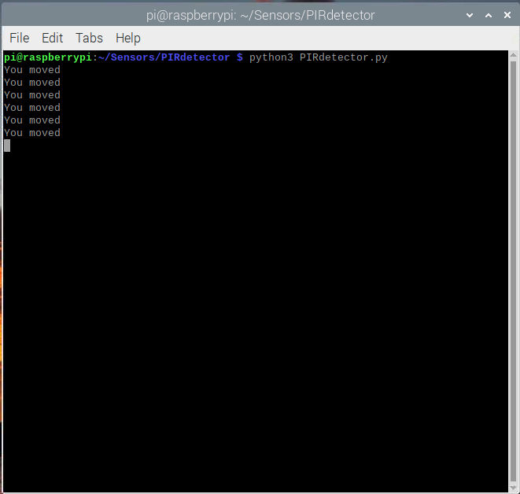
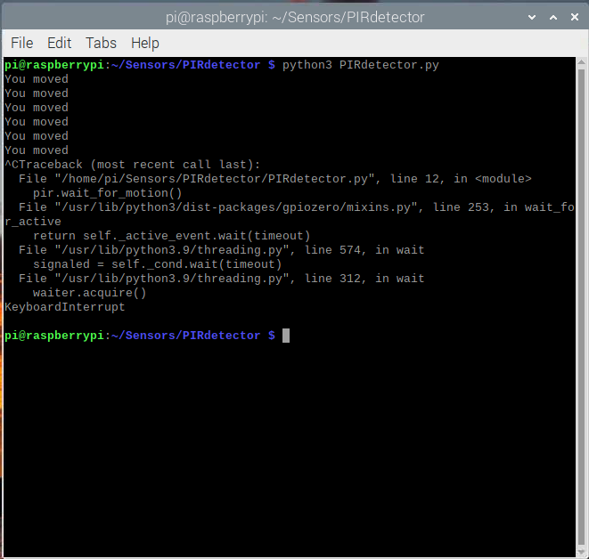
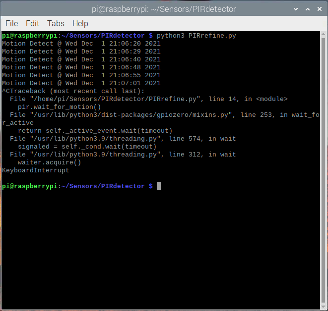

Infrared Motion Detector¶
A simple sensor system to test our microcomputer is an infrared motion detector using a passive infrared (PIR) detector.
Objective¶
Our objective is really to simply test our build, a PIR sensor is quite simple to construct, so its a good starting point. The sensor and code can be adapted to practical uses, so although simplistic here - a little refinement can produce a useful tool for some engineering measurements.
Operation Principle¶
Passive infrared (PIR) sensors use a pair of pyroelectric sensors to detect heat energy in the surrounding environment. These two sensors sit beside each other, and when the signal differential between the two sensors changes (if a person enters the room, for example), the sensor will engage. That may mean it triggers an alarm, notifies authorities, or maybe turns on a floodlight. IR radiation focuses on each of the two pyroelectric sensors using a series of lenses constructed as the sensor’s housing. These lenses widen the device’s sensing area.
While the lens setup and sensor electronics are sophisticated technology, these units are easy to use in a practical application. You only need power and ground for the sensor to produce a discreet output that’s strong enough for a microcontroller to use. Typical adjustments include adding potentiometers for sensitivity and tweaking how long a PIR stays engaged once it’s triggered. You can also toggle the sensor between:
Staying on for a set amount of time after detecting movement.
Pulsing on and off in a “non-retriggering” mode.
You’ll commonly see PIR sensors in security alarms and automatic lighting setups. These applications don’t require that the sensor detect an object’s specific location, just that objects or people in a particular area are moving around.
Hardware¶
For this lesson we will use the KS0052 PIR module https://wiki.keyestudio.com/Ks0052_keyestudio_PIR_Motion_Sensor. It costs about $13 USD for a box of three modules. You can buy it at Amazon and a few other sources https://www.amazon.com/KEYESTUDIO-Motion-Sensor-Arduino-Pyroelectric/dp/B07FGDW24X/ref=dp_prsubs_1?pd_rd_i=B07FGDW24X&psc=1
GPIO API Libraries¶
Several libraries (external modules in python parlance) are available to communicate with the hardware module. In this lesson we will use gpiozerohttps://gpiozero.readthedocs.io/en/stable/index.html.
This library produces really simple to read code (naturally there is a lot going under the hood), and appears to install with Raspberry Pi OS. A list of available “recipies” (functions that access the GPIO pins) is located at https://gpiozero.readthedocs.io/en/stable/recipes.html#
The “recipes” either operate on pins using the naming convention depicted in the figure

or the physical pin using the BOARD## directive.
Depending on the library used we will be specifying logical or physcial pins throughout this course; because the audience is Civil Engineering students, our goal is to get stuff to work - we don’t particularly care about the details of the little black boxes that are the sensor modules and these various libraries.
3-Pin Sensors¶
The KS0052 is a three-pin sensor module - these are pretty common we will supply power via a voltage input (+5VDC) and ground, and read the sensor output on the third pin which is labeled the signal pin.
The figure below is a wiring diagram from https://projects.raspberrypi.org/en/projects/physical-computing/11

I dont pay a lot of attention to wire color in these diagrams, but we have to get the pin terminals correct for stuff to work. Here are photographs of our setup

A close-up of the sensor module

and a close-up of the pin header extension board.

Sample Code¶
Our sample code is listed below. The MotionSensor(logicalPin) recipe is assigned to an object named pir. A polling loop is started (notice it runs indefinitely - a keyboard interrupt stops it) when the sensor detects a thermal change it sends a message to the terminal and prints a message. When nothing is going on, it just keeps polling. Its a dumb program as written but will let us test our computer system.
# PIR Detector Example Program
# Simple first GPIO program
# Code is copied/adapted from https://projects.raspberrypi.org/en/projects/physical-computing/11
# May have to use pip to get the gpio api
from gpiozero import MotionSensor
pir = MotionSensor(4)
while True:
pir.wait_for_motion()
print("You moved")
pir.wait_for_no_motion()
Running the System¶
The code above is saved to a file named PIRdetector.py which was written using the IDLE editor, although nano would have been just fine. To run the script we simply execute
$ python3 PIRdetector.py
A screen capture after starting is below

Then using a very bright torch as a heat source we cause a \(\Delta T\) in the sensor a few times.

Finally we send a termination signal.

Refinement¶
A meaningful refinement would be to report the time when motion is detected, as shown below
# PIR Detector Example Program
# Simple first GPIO program
# Code is copied/adapted from https://projects.raspberrypi.org/en/projects/physical-computing/11
# May have to use pip to get the gpio api
from gpiozero import MotionSensor
import time
pir = MotionSensor(4)
while True:
pir.wait_for_motion()
now = time.strftime("%c") #time detect motion
print("Motion Detect @ " + now)
pir.wait_for_no_motion()
Here is the program run for a bit then interrupted

Exercises¶
Refine the program to detect motion over a 120 second interval then self-terminate. Research the
timemodule to figure out how to run the program for 120 seconds elapsed time.Read the MotionSensor recipe athttps://gpiozero.readthedocs.io/en/stable/recipes.html#. Using the documentation as a guide, build a system that not only reports time of detection but activates an LED signal when motion is detected.
Note
The exercises are simple, but important - if you are new to controller programming you may find Exercise 1 difficult, but just apply the problem solving protocol in ENGR 1330 to work out a wrapper then embed the detector recipe. Its fine to use Google and copy/cite other people’s code just include at least a URL to the code source.